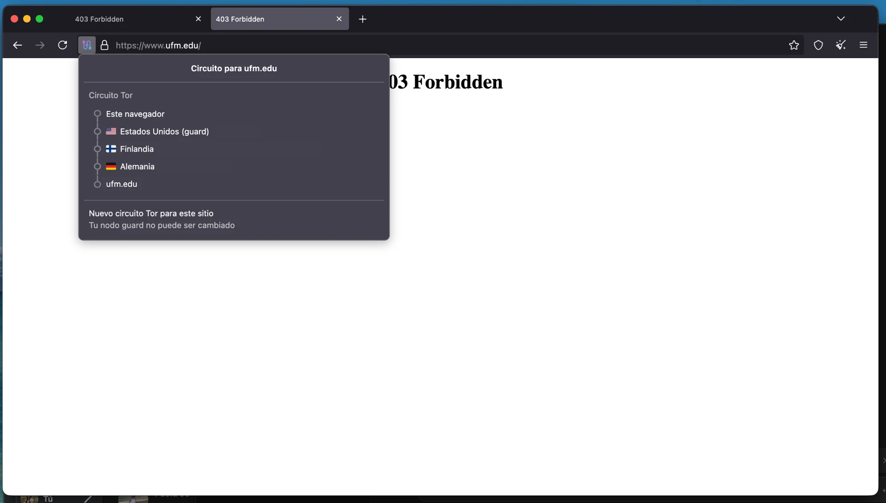
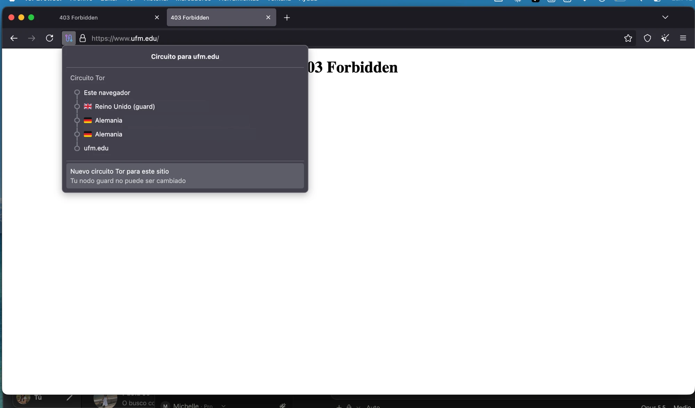
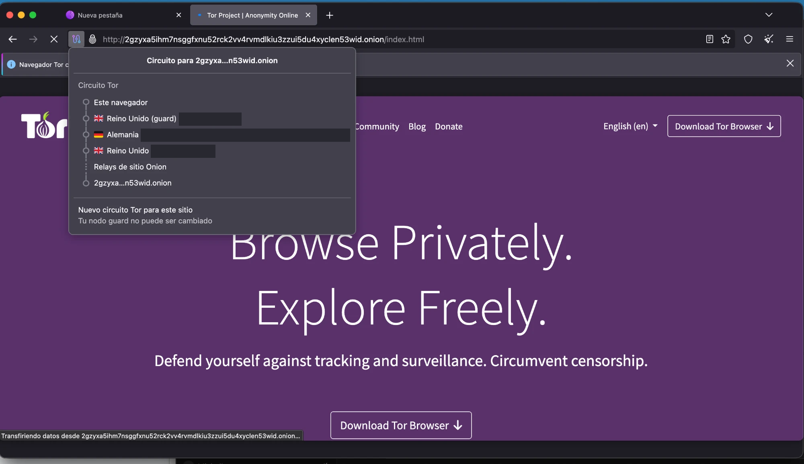
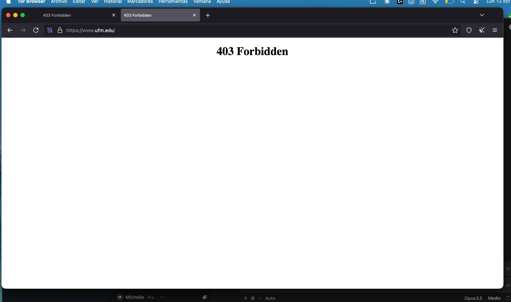

Resumen del laboratorio
Lab de observación y análisis, no de operación de red. Con Tor Browser oficial (descargado de torproject.org, configuración por defecto) se observó el circuito real hacia un sitio clearnet HTTPS, se convirtió en una tabla de quién-ve-qué y se contrastó con el navegador normal. El homework es THREAT.md: el threat model del flow de onboarding con KYC del venture.
Tesis: HTTPS cifra el qué (payload); Tor intenta esconder el quién ↔ con quién (metadata). Son propiedades distintas y se combinan.
Estado de actividades
Parte A: circuito observado
Tor Browser 15.0.24 (Firefox 140.17.0esr), actualizado. Red usada: casa (ISP residencial). Sitio: https://www.ufm.edu/. Sin IPs completas.
Después de "Nuevo circuito Tor para este sitio"
| Hop | Antes | Después | ¿Cambió? |
|---|---|---|---|
| Guard | Estados Unidos | Reino Unido | Ver nota volvió al relay de la primera prueba |
| Middle | Finlandia | Alemania | Sí |
| Exit | Alemania | Alemania | Sí: otro relay |
El guard: a las 4:57 p.m. (torproject.org) fue un relay de Reino Unido; en la noche, el circuito 1 usó uno de Estados Unidos y el circuito 2 volvió al mismo relay de Reino Unido (misma IP, comparada en privado). Ese es el guard estable: Tor mantiene una lista corta de primary guards y usa el primero que responda, así que el de Estados Unidos parece un respaldo temporal (hipótesis). Middle y exit sí se sortean en cada circuito; el guard no, para no caer con el tiempo en uno malicioso que vería mi IP. En las tres capturas el panel dice "Tu nodo guard no puede ser cambiado".


Hallazgos
- Redirección a .onion:
torproject.orgabrió su versión .onion y el circuito no tenía exit ("Relays de sitio Onion"). Los onion services están fuera de alcance, así que se usó un sitio clearnet sin cambiar ninguna configuración. - 403 Forbidden:
www.ufm.edurechazó la petición por Tor y cargó normal en el navegador de siempre. La lista de exits es pública: el sitio no sabe quién soy, pero sí que vengo de Tor.


Parte B: quién ve qué
| Punto | Ve | No ve |
|---|---|---|
| Red local / ISP (casa) | Mi IP; que uso Tor (IP del guard, pública); volumen y tiempos | Destino; contenido |
| Guard (EE. UU. / Reino Unido) | Mi IP; IP del middle; volumen y tiempos | Destino; contenido |
| Middle (Finlandia) | IP del guard e IP del exit | Mi IP; destino; contenido |
| Exit (Alemania) | Destino (www.ufm.edu); IP del middle; con HTTPS solo bytes cifrados, tamaño y tiempos | Mi IP; contenido |
Sitio (www.ufm.edu) | IP del exit, y por eso que vengo de Tor; lo que yo le dé (login, cookies, formularios) | Mi IP real; quién soy |
Contraste con el navegador normal
Sin Tor el sitio cargó y vio mi IP real (ubicación aproximada y proveedor). Mi ISP vio mi IP, la IP del servidor
y el hostname www.ufm.edu (DNS y SNI), además de hora y volumen; no el contenido, por HTTPS. Con Tor esa
información queda repartida: el ISP solo ve un guard y el sitio solo ve un exit.
Si el exit fuera malicioso, con este sitio HTTPS podría ver el dominio, la IP del servidor, la hora y cuántos bytes van y vienen, y no podría ver mi IP, la URL completa ni el contenido de las páginas, cookies o formularios.
connected: sí
el exit ve: el destino (www.ufm.edu) y el volumen/tiempos, pero no mi IP ni el contenido (HTTPS)THREAT.md: onboarding con KYC
Flow: login y subida de DPI + selfie con POST /kyc por HTTPS. Payload = imágenes y datos; metadata = IP, destino, hora, tamaño.
| Pregunta | Solo HTTPS | Tor (vía exit) | I2P (in-net) |
|---|---|---|---|
| IP del usuario | ISP, camino, CDN y venture | ISP y guard; el venture ve un exit | ISP y primer router del tunnel; el servicio ve un destino I2P |
| Destino | ISP y red local (DNS, SNI, IP) | El exit; el ISP solo ve "usa Tor" | Ningún router intermedio (leaseSet + tunnels) |
| Payload | Usuario y venture | Igual: TLS sigue; relays ven bytes cifrados | Usuario y venture |
| Exit / relay malicioso | Equivale a ISP malicioso: ve destino, no DPI | Ve destino, hora y MB; puede bloquear; no lee el DPI | No hay exit; un router ve vecinos y bytes cifrados |
| Si inicia sesión | Nada nuevo | Anonimato frente al venture se acaba | Igual que Tor |
| Costo | Ninguno | Latencia, CAPTCHAs, bloqueo de exits (403 de ufm.edu) | Instalar router, sin app móvil, servicio in-net |
| Qué sigue viendo el venture | Todo | KYC, cuenta, transacciones; no la IP real | KYC completo; no la IP |
- Adversarios: HTTPS defiende contra lectura en el camino; Tor agrega defensa contra red local, ISP y un gobierno con visibilidad parcial. Ninguna defiende contra correlation end-to-end ni contra el venture mismo.
- Tres cosas que Tor no protege: (1) login y KYC en la capa de aplicación; (2) correlación de tiempos y tamaños; (3) tráfico fuera de Tor Browser, EXIF de las fotos y fingerprinting.
- I2P: tunnels unidireccionales inbound/outbound, netDb sin directory authorities, garlic encryption con cloves; pensado para servicios dentro de la red, no para salir al clearnet.
- Decreto 15-2026: si somos Persona Obligada, aceptar Tor no cambia el deber de identificar, registrar y reportar; qué conservar depende del reglamento pendiente del art. 127. Iniciativa 6538 no es ley.
Documento completo: THREAT.md · Notas: KICKOFF.md · Guía: README.md
Límites respetados
- Solo Tor Browser oficial con configuración por defecto; sin reconfigurar la selección de nodos.
- Solo sitios clearnet HTTPS públicos y legales; sin onion services, eepsites, relays ni bridges.
- Hecho desde la red de casa, sin evadir controles de red de ninguna institución. Capturas sin IPs completas.